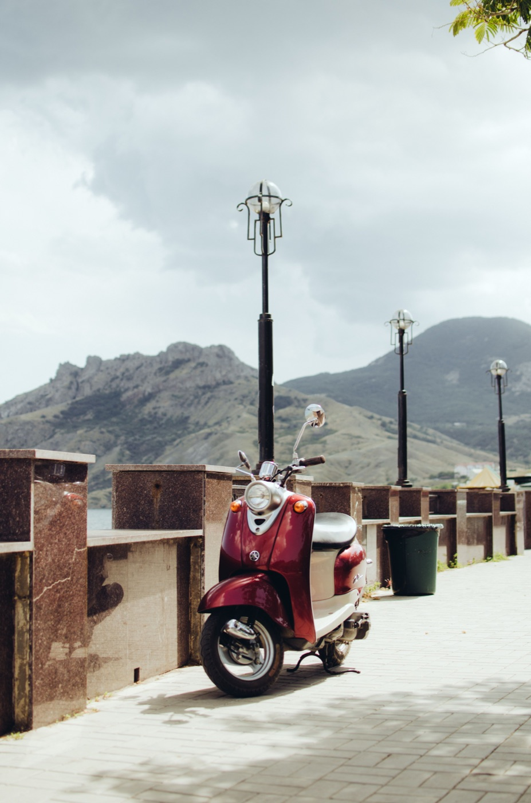
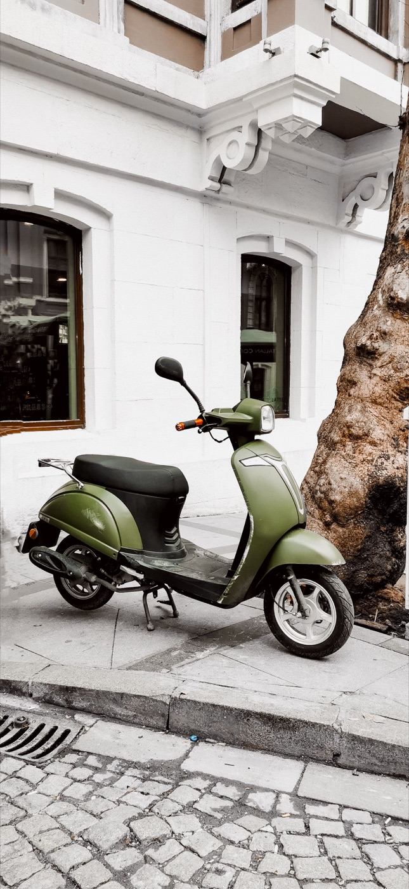

Что проверить на байке перед поездкой

Ежедневная проверка не требует инструмента и занимает около двух минут. Она не заменяет сервис, зато помогает заметить спущенную шину, неработающий стоп-сигнал или течь до выезда в плотный поток.
1. Посмотри под байк
Свежие капли топлива, масла или другой жидкости — причина не ехать, пока не понятен источник. След от старой воды после мойки не страшен, но резкий запах бензина требует проверки.
2. Проверь обе шины

Посмотри, не просело ли колесо, нет ли гвоздя, глубокого пореза или вздутия. Нажатие рукой даёт только грубое понимание — давление периодически измеряй манометром. Подробности есть в статье про шины и прокол.
3. Нажми тормоза
Рычаг не должен проваливаться до руля. Прокати байк вперёд на несколько сантиметров и отдельно проверь передний и задний тормоз. После дождя первые торможения делай особенно плавно.
4. Включи свет
- ближний и дальний свет;
- оба поворотника;
- задний габарит;
- стоп-сигнал от каждого тормозного рычага;
- звуковой сигнал.
Стоп-сигнал удобно проверить по отражению в витрине или стене.
5. Оцени руль и зеркала
Руль поворачивается свободно, без закусывания. Зеркала стоят так, чтобы видеть полосу позади, а не собственные плечи. Не настраивай их уже в движении.
6. Послушай запуск
Необычный металлический стук, резкий свист, плавающие обороты или внезапный дым — не фон для поездки. Заглуши мотор и разбирайся с причиной. Если байк долго не заводится, не мучай стартер непрерывно.
7. Топливо, ключ и документы
Перед дальней поездкой проверь уровень топлива, возьми нужные документы и убедись, что под сиденьем ничего не мешает замку закрыться. Телефон заряжен, маршрут понятен, шлем застёгнут.
Когда точно не ехать
Не выезжай при мягкой или повреждённой шине, явной течи, отказе тормоза, заклинивающем руле или сильном новом звуке двигателя. Эвакуация или помощь мастера дешевле падения и большого ремонта.
Как мы готовим байк перед продажей — отдельный подробный материал.